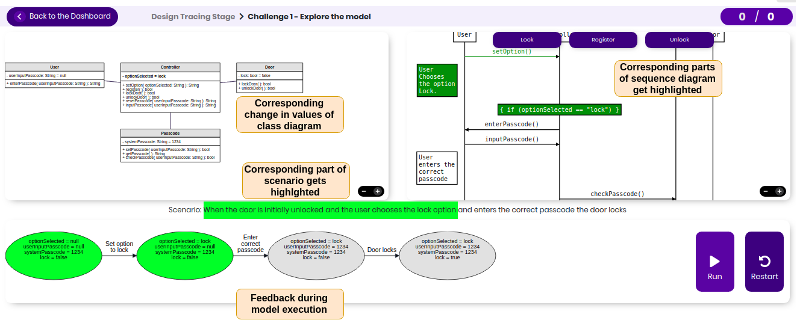
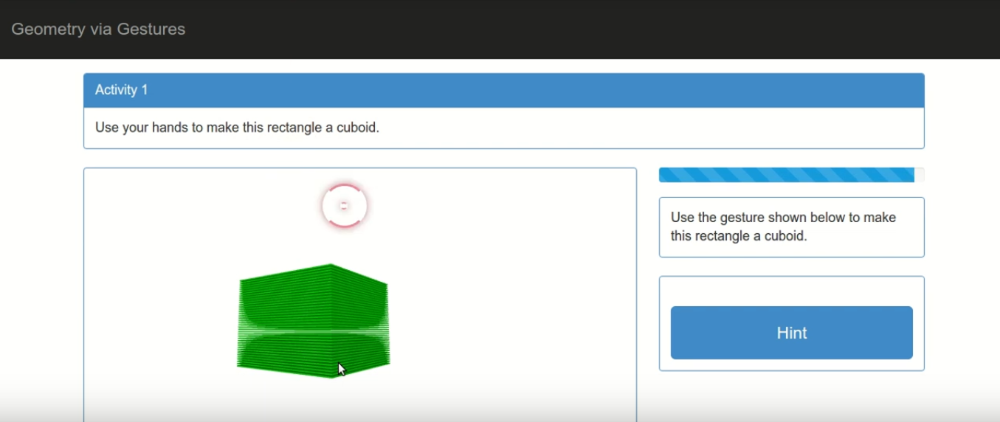

|
Prajish Prasad
I am a computing education researcher. I'm broadly interested in understanding how students reason with software design diagrams. I draw inspiration from learning sciences, software engineering and computing education literature for my research.
I completed my PhD in July 2021, from the Interdisciplinary Programme in Educational Technology at IIT Bombay. My advisor was Prof. Sridhar Iyer. As part of my thesis, I developed a technology enhanced learning environment VeriSIM, which helps learners reason with software design diagrams like class diagrams and sequence diagrams. You can access VeriSIM here. More info about VeriSIM can be found here.
I am part of the Computing Education Research group at EdTech IIT Bombay. Check out this blog post for an overview of our reseach and outreach efforts.
News
- I discussed with Dr. Yogendra Pal from ET Mantra about my interest in Educational Technology, my thesis and VeriSIM. You can watch the talk here
- I successfully defended my thesis on 1st July 2021! You can find my thesis here, and my defense presentation here
Key Research Projects
Developing Software Design Evaluation Skills in Computing Undergraduates
|
 |
As part of my doctoral thesis, I conducted studies with students to identify difficulties they faced while comprehending and evaluating software design diagrams. Based on these findings, I developed a technology-enhanced learning environment VeriSIM, to help students develop an integrated understanding of design diagrams. I conducted classroom studies with students to evaluate the effectiveness of VeriSIM and its features. Findings from these studies show that VeriSIM improved students’ ability to trace scenarios and evaluate the design against the given requirements. Student perceived that VeriSIM helped them develop an integrated understanding of the design, and also in identifying missing features and defects in the design.
Publications: [ICSE 2020 | ICER 2020 | Koli Calling 2020]
|
Gesture based Learning of Geometry
|
 |
This project was done in collaboration with T.G. Lakshmi, Soumya Narayana, Prof. Sahana Murthy from IIT Bombay, and Prof. Sanjay Chandrasekharan from HBCSE, Mumbai. We developed Geometry via Gestures (GvG), a web-based application which enables learners to interact with 3D objects using their gestures. GvG interfaces with the Leap Motion Controller, in order to provide gesture support to students. We conducted an exploratory study to examine students' perception of learning while using GvG. The GvG application can be used by students and instructors in their learning of 3D geometry, and also contributes towards the theory of gesture based learning.
Publications: [T4E 2016 | ICCE 2016]
|
Publications
Thesis-related Publications
-
Prasad, P., & Iyer, S. (2020, August). How do Graduating Students Evaluate Software Design Diagrams?. In Proceedings of the 2020 ACM Conference on International Computing Education Research (pp. 282-290).
[ Paper | Presentation Video ]
Prasad, P., & Iyer, S. (2020, June). VeriSIM: a learning environment for comprehending class and sequence diagrams using design tracing. In Proceedings of the ACM/IEEE 42nd International Conference on Software Engineering: Software Engineering Education and Training (pp. 23-33). [ Paper | Blog Post | Presentation Video ]
-
Prasad, P., & Iyer, S. (2020, November). Inferring Students’ Tracing Behaviors from Interaction Logs of a Learning Environment for Software Design Comprehension. In Koli Calling'20: Proceedings of the 20th Koli Calling International Conference on Computing Education Research (pp. 1-2). [ Paper| Poster ]
-
Reddy, D., Alse, K., Lakshmi, T.G., Prasad, P., & Iyer, S. (2021, March). Learning Environments for Fostering Disciplinary Practices in CS Undergraduates. In SIGCSE 2021: To appear.
Prasad, P. (2018, August). Developing Students’ Cognitive Processes Required for Software Design Verification. In Proceedings of the 2018 ACM Conference on International Computing Education Research (pp.284-285). ACM.
Publications from other Projects
Kadam K., Deep A., Prajish Prasad, Mishra S.(2019) Quantitative Evaluation of Concept Maps: An Evidence-Based Approach in the Companion Proceedings 9th International Conference on Learning Analytics & Knowledge (LAK19). Slides here
Lakshmi, T. G., Prasad, P., & Iyer, S. (2017, July). A System for Developing Operationalization Skills through Problem Decomposition. In 2017 IEEE 17th International Conference on Advanced Learning Technologies (ICALT) (pp. 427-429). IEEE.
Narayana, S., Prasad, P., Lakshmi, T. G., & Murthy, S. (2016, December). Geometry via Gestures: Learning 3D geometry using gestures. In 2016 IEEE Eighth International Conference on Technology for Education (T4E) (pp. 26-33). IEEE.
Lakshmi, T. G., Narayana, S., Prasad, P., Murthy, S., & Chandrasekharan, S. (2016). Geometry-via-Gestures: Design of a gesture based application to teach 3D Geometry. In Proceedings of the 24th international conference on computers in education (pp. 180-189). Mumbai, India: Asia‐Pacific Society for Computers in Education.
Deep, A., Prasad, P., Narayana, S., Chang, M., & Murthy, S. (2016, July). Game Based Learning of Blood Clotting Concepts. In 2016 IEEE 16th International Conference on Advanced Learning Technologies (ICALT) (pp. 526-530). IEEE.
Alse, K., Ganesh, L., Prasad, P., Chang, M., & Iyer, S. (2016, July). Assessing Students' Conceptual Knowledge of Computer Networks in Open Wonderland. In 2016 IEEE 16th International Conference on Advanced Learning Technologies (ICALT) (pp. 513-517). IEEE.
Service Experience
CSEdGrad Study Group Leader
I was a leader for two Study groups, organized by the CSEdGrad project, an NSF funded project, which aims to support the growth of research in CS education worldwide. My key responsibilities included posting focus questions on discussion forums, facilitating online discussions, and leading a synchronous online
meeting with CSEd graduate students. Workshop Instructor
Designing & Conducting Research Studies at COMPUTE 2020, December 2020
(along with Shitanshu Mishra, T. G. Lakshmi and Pankaj Chavan)
Software Design Workshop at SIES Graduate School of Technology, Navi Mumbai, December 2019
(along with T. G. Lakshmi and Deepti Reddy)
Computing Education Workshop at COMPUTE 2019, University of Goa, October 2019
(along with T. G. Lakshmi, Kavya Alse, Deepti Reddy and Sridhar Iyer)
FrCRCE ACM Student Chapter Workshop: Understanding Software Design, Fr. Conceicao Rodrigues College of Engineering, Mumbai, September 2019
TEQIP Faculty Induction Program Session: Active Learning: Why, What and How, IIT Bombay, February 2018.
Teaching-Assistant
MOOC Course on NPTEL 2019 - Introduction To Learning Analytics
MOOC Course ET611Tx 2017 - Pedagogy for effective use of ICT for school teachers.
MOOC Course ET612Tx 2017 - Pedagogy for effective teaching-learning of CS in schools.
MOOC Course ET601Tx 2016 - Educational Technology for Engineering Teachers.
Workshop on Nurturing Quality Teaching in Engineering Education, TKM College of Engineering, Kollam, Kerala, December 2017.
Reviewer:
-
Journals: Computer Science Education, Interactive Learning Environments
-
Conferences: ITiCSE 2018-2020, SIGCSE 2020-2021, ICLS 2020, AIED 2020, ICCE 2016 TELOTS Workshop
Local Organizing Committee Member for International conferences: LaTiCE 2016, ICCE 2016, T4E 2016
|